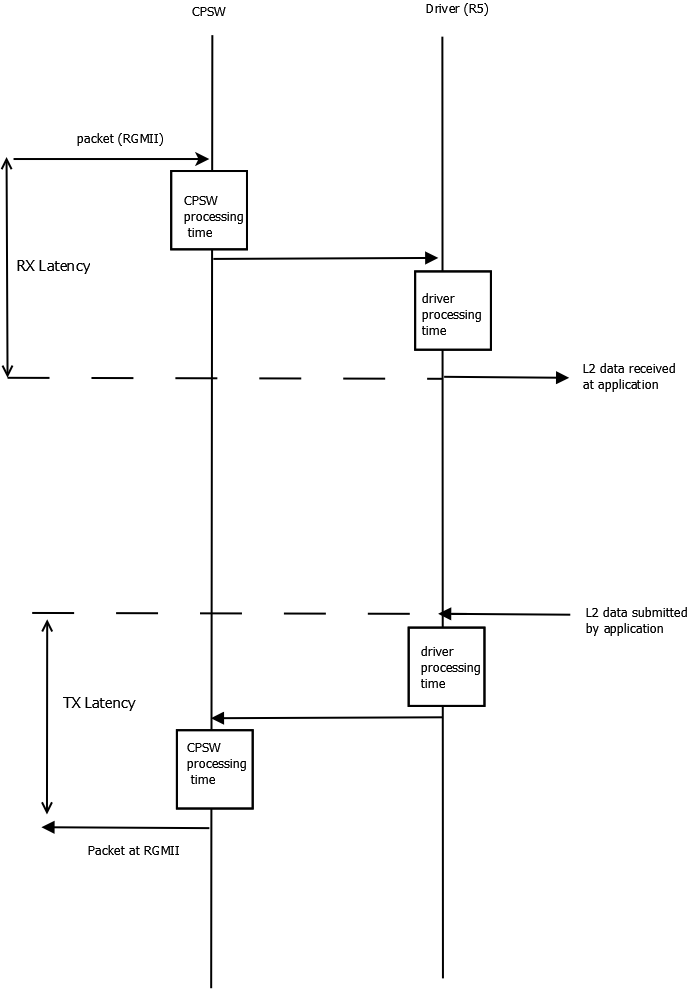
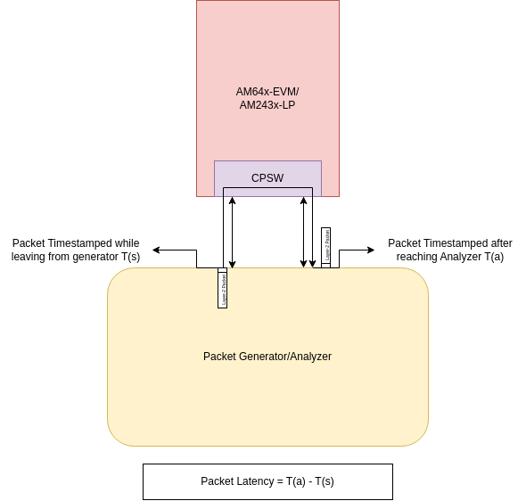

|
AM64x MCU+ SDK
12.01.00
|
|
|
AM64x MCU+ SDK
12.01.00
|
|
This section provides the performance numbers of Ethernet drivers using CPSW peripheral in MCU+ SDK
| SOC Details | Values |
|---|---|
| Core | R5F |
| Core Operating Speed | 800 MHz |
| Memory Type | MSRAM |
| Cache status | Enabled |
| EVM Type | AM64X-EVM |
| SOC Details | Values |
|---|---|
| Core | A53 |
| Core Operating Speed | 1 GHz |
| Memory Type | DDR |
| Cache status | Enabled |
| EVM Type | AM64X-EVM |

| Configuration | Value |
|---|---|
| Processing Core | Main R5F0 Core 0 |
| Core Frequency | 800 MHz |
| Ethernet Interface Type | RGMII at 1 Gbps |
| Packet buffer memory | MSRAM |
| Scatter-gather TX | Yes |
| Scatter-gather RX | Yes |
| UDMA interrupt pacing | NO |
| RTOS | FreeRTOS |
| RTOS application | Modified Enet CPSW Loopback Example example |
| Host PC tool version | nload |
| Rx packet length | 200 B |
| Tx packet length | 200 B |
| Parameter | CPU<->CPSW Latency Value (ns) | PHY Latency (from datasheet) in ns | Total Latency (ns) |
| RX Latency | 14000 | 193 | 14193 |
| TX Latency | 7000 | 384 | 7384 |
| Configuration | Value |
|---|---|
| Processing Core | Main A53S0 Core 0 |
| Core Frequency | 1 GHz |
| Ethernet Interface Type | RGMII at 1 Gbps |
| Packet buffer memory | DDR (uncached) |
| Scatter-gather TX | Yes |
| Scatter-gather RX | Yes |
| UDMA interrupt pacing | NO (UDMA is polled) |
| RTOS | FreeRTOS |
| RTOS application | Modified Enet CPSW Loopback Example example |
| Host PC tool version | nload |
| Rx packet length | 200 B |
| Tx packet length | 200 B |
| Parameter | CPU<->CPSW Latency Value (ns) | PHY Latency (from datasheet) in ns | Total Latency (ns) |
| RX Latency | 16000 | 193 | 16193 |
| TX Latency | 8000 | 384 | 8384 |
| Configuration | Value |
|---|---|
| EVM Type | AM243x-LP E3 |
| CPSW CPPI Frequency | 320 MHz |
| Ethernet Interface Type | RGMII |
| PHY model number | DP83869 |
| Ethernet Cable Spec | CAT-6 |
| Sample size | 10 Million Packets |
| RTOS application | Modified Enet Layer 2 CPSW SWITCH Example example |

| Datagram Length | Latency @ 1Gbps link (in us) | Latency @ 100Mbps link (in us) | Latency @ 10Mbps link (in us) | |||
| Without Cut-Through | With Cut-Through | Without Cut-Through | With Cut-Through | Without Cut-Through | With Cut-Through | |
| 64 Bytes | 1.8 | 1.7 | 7.9 | 7.8 | 73.4 | 71.9 |
| 256 Bytes | 3.1 | 2.0 | 23.0 | 13.8 | 227.3 | 135.6 |
| 512 Bytes | 5.2 | 2.0 | 43.5 | 13.8 | 432.0 | 135.6 |
| 1518 Bytes | 13.3 | 2.0 | 124.0 | 13.8 | 1237.0 | 135.6 |
| Configuration | Value |
|---|---|
| Processing Core | Main R5F0 Core 0 |
| Core Frequency | 800 MHz |
| Ethernet Interface Type | RGMII at 1 Gbps |
| Packet buffer memory | MSRAM (cached) |
| Hardware checksum offload | Enabled on both Tx and Rx Side |
| Scatter-gather TX | Yes |
| Scatter-gather RX | Yes |
| UDMA interrupt pacing | Yes (realized with timer based interrupt pacing) |
| RTOS | FreeRTOS |
| RTOS application | Enet Lwip CPSW Example in examples |
| TCP/IP stack | LwIP version STABLE-2_2_1_RELEASE |
| Host PC tool version | iperf v2.0.10 |
| Number of Rx packet buffers | 32 |
| Number of Tx packet buffers | 16 |
| Configuration | Value |
|---|---|
| Processing Core | Main A53S0 Core 0 |
| Core Frequency | 1 GHz |
| Ethernet Interface Type | RGMII at 1 Gbps |
| Packet buffer memory | DDR |
| Hardware checksum offload | Enabled on both Tx and Rx Side |
| Scatter-gather TX | Yes |
| Scatter-gather RX | Yes |
| UDMA interrupt pacing | Yes (realized with timer based interrupt pacing) |
| RTOS | FreeRTOS |
| RTOS application | Enet Lwip CPSW Example in examples |
| TCP/IP stack | LwIP version STABLE-2_2_1_RELEASE |
| Host PC tool version | iperf v2.0.10 |
| Number of Rx packet buffers | 32 |
| Number of Tx packet buffers | 16 |
R5F core as host
| Test | Bandwidth (Mbps) | CPU Load (%) |
| TCP RX | 93.3 | 43 |
| TCP TX | 93 | 72 |
| TCP Bidirectional | RX=81.5 TX=81.5 | 99 |
A53 core as host
| Test | Bandwidth (Mbps) | CPU Load (%) |
| TCP RX | 93.5 | 17 |
| TCP TX | 93 | 23 |
| TCP Bidirectional | RX=93 TX=93 | 40 |
Host PC commands:
iperf -c <evm_ip> -riperf -c <evm_ip> -dR5F core as host
| Test | Datagram Length = 256B | Datagram Length = 512B | Datagram Length = 1470B | ||||||
| Bandwidth (Mbps) | CPU Load (%) | Packet Loss (%) | Bandwidth (Mbps) | CPU Load (%) | Packet Loss (%) | Bandwidth (Mbps) | CPU Load (%) | Packet Loss (%) | |
| UDP RX | 5 | 14 | 0.0 | 25 | 27 | 0.011 | 50 | 25 | 0.051 |
| 10 | 21 | 0.08 | 50 | 49 | 0.35 | 65 | 31 | 0.18 | |
| 25 | 46 | 0.22 | 65 | 59 | 6.5 | 95 | 43 | 0.28 | |
| UDP RX (Max) | 28 | 50 | 0.29 | 59 | 57 | 0.6 | 155 | 68 | 0.26 |
| UDP TX (Max) | 68 | 100 | 0.0 | 136 | 100 | 0.0 | 389 | 100 | 0.0 |
A53 core as host
| Test | Datagram Length = 256B | Datagram Length = 512B | Datagram Length = 1470B | ||||||
| Bandwidth (Mbps) | CPU Load (%) | Packet Loss (%) | Bandwidth (Mbps) | CPU Load (%) | Packet Loss (%) | Bandwidth (Mbps) | CPU Load (%) | Packet Loss (%) | |
| UDP RX | 5 | 6 | 0.0 | 25 | 13 | 0.08 | 50 | 10 | 0.02 |
| 10 | 10 | 0.04 | 50 | 25 | 0.19 | 65 | 12 | 0.06 | |
| 25 | 25 | 0.19 | 65 | 42 | 4.6 | 95 | 68 | 0.0 | |
| UDP RX (Max) | 30 | 29 | 1 | 60 | 30 | 0.6 | 170 | 31 | 0.2 |
| UDP RX (Max) With 128 Rx pkt bufs | 94 | 91.5 | 0.29 | 199 | 97.4 | 0.6 | 557 | 99.9 | 2 |
| UDP TX (Max) | 114 | 100 | 0.0 | 227 | 100 | 0.0 | 652 | 100 | 0.0 |
Host PC commands:
iperf -c <evm_ip> -u -l64 -b <bw> -riperf -c <evm_ip> -u -l256 -b <bw> -riperf -c <evm_ip> -u -l512 -b <bw> -riperf -c <evm_ip> -u -b <bw> -r 1.8.20
1.8.20